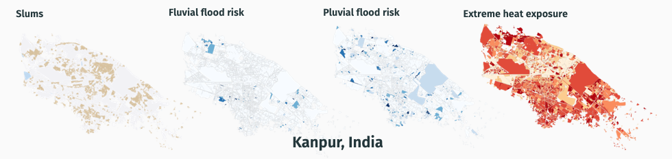
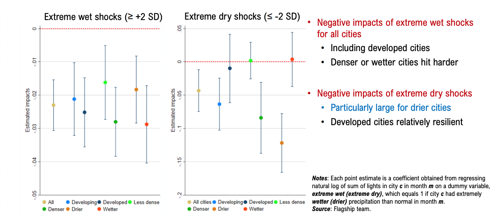
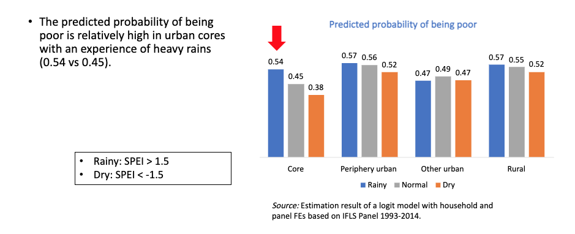

Climate Change, Urban and Sustainability
Climate Change, Urban and Sustainability#
The activity will consist of the preparation of a Global Flagship report, the preliminary working title of which is Surviving to Thriving: Making Cities Green, Resilient, and Inclusive. In addition to synthesizing insights from existing literature, preparation of the report will be informed by background research aimed at filling key empirical knowledge gaps that will help to inform the report’s discussion of institutional reforms and policies for promoting green, resilient, and inclusive urban development.
The team are utilizing temperature and precipitation based index: SPEI, SPI, CDD, CWD, Number of annual hotdays and Annual mean temperature to support the analysis which organized into four inter-related workstreams:
Who is affected?
Stressor that make urban development less green
Stressors that make urban development less resilient
Stressors that make urban development less inclusive
Some example are below
Who is affected? Which segments of city population are most exposed to climate-related stresses?
The analysis utilise CHELSA to generate heat hazard information number of annual hot days (a day with temperature above 35 degC), combined with FATHOM flood hazard to assess whether informal resident parcels (slums) coincide with hazard-prone areas in various cities:
BDI Bujumbura
BFA Ougadougou
CAR Bangui
GHA Accra
ETH Addis Ababa
ETH Diredawa
MLI Bamako
NER Niamey
TCD Ndjamena
ZWE Bulawayo
ZWE Harare
ZWE Mutare
IND Amritsar
IND Auraiya
IND Kanpur
LKA Colombo
LKA Kandy
TZA Dar es Salaam
VNM Ho Chi Minh
PHL Manila
AFG Jalalabad
AFG Kabul
PAK Karachi
MNG Ulaanbaatar
BRA Porto Alegre
HTI Cap Haitien
BIH Sarajevo

Stressors that make urban development less resilient Urban resilience and weather shocks: a global nighttime lights analysis
The study try to estimates short-term effects of different types of weather shocks on city economic activitiy using monthly TerraClimate data combined with high-resolution nighttime light monthly composites.
Some of the results, extreme weather shocks are challenging for all, whereas resilience to extreme dry shocks are widely across city characteristics.

Stressors that make urban development less inclusive Is climate change slowing the urban escalator out of Poverty? Evidence from Indonesia and Latin America Countries (LAC)
Climatic variables that can help to measure dry and wet condition (SPEI) has been prepared at sub-district (admin3) level for Indonesia and LAC.
Example result from Indoneisa : climatic shocks on urbanescalator
